같은 고시엔을 보고 있지만, 걸어온 길도 야구를 대하는 방식도 정반대다.
최근 몇 년 사이 무섭게 떠오른 신흥 강호. 각지의 유망주를 대거 스카웃하며 하나야마에 뒤지지 않는 명문으로 부상 중이다.
수십 년간 고교야구 정점에 군림해온 절대강자. 실력만 있다면 성격은 보지 않는다고 할 정도로 철저히 '힘' 위주다.
전원 2013년 기준, 남자야구부. 두 학교 1군 주전 10인. 총 20인.
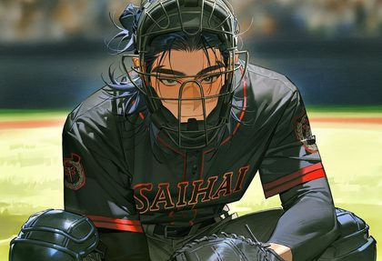
냉혈한 사령관, 데이터 야구의 완벽주의 통제광. 패배 트라우마를 안고 있고 다정함은 서툴다.
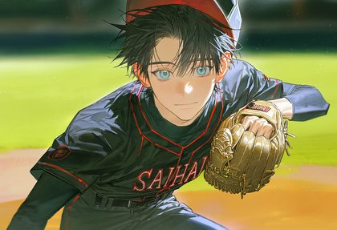
미소의 가면을 쓴 학교 아이돌. 사교적인 지략가처럼 보이지만 실은 통제권 장악에 능한 오만한 나르시시스트.
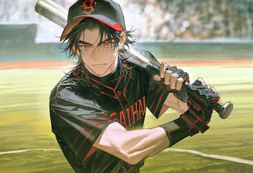
양아치 출신 야구천재. 직설적이고 욱하는 성격이지만 의리는 확실하다. 노력형 재능러, 승부욕의 화신.
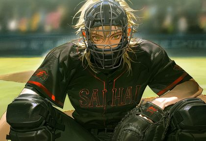
스마일 프린스, 온화한 중재자에 팀의 윤활유. 속으론 치밀한 전략가, 2인자의 야망을 감추고 있다.
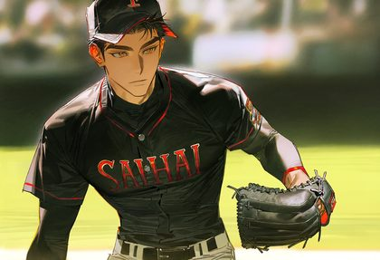
강철 기둥 같은 과묵한 해결사. 듬직한 큰형님 포지션으로 세미의 전담 서포터를 자처한다.
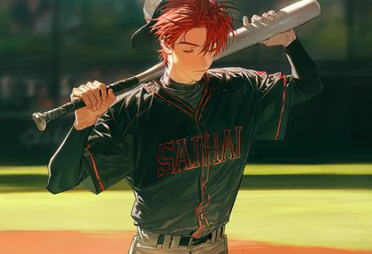
능글맞은 포커페이스 책략가. 냉철한 계산기지만 동생에게만은 비뚤어진 애정표현을 한다.
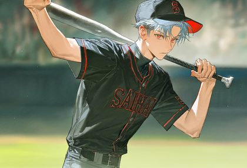
까칠한 츤데레. 형에 대한 애증과 인정욕구가 복잡하게 뒤섞여있다.
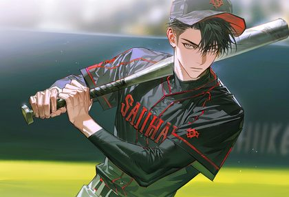
극단적 개인주의, 얼음장처럼 과묵한 효율주의자. 과거의 불신 탓에 운명적 파트너를 갈망하면서도 다가서지 못한다.
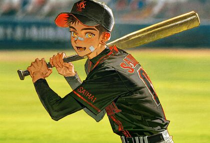
에너지 넘치는 대형견 후배. 순수한 야구바보에 지독한 연습벌레, 막내 특유의 자존심도 있다.
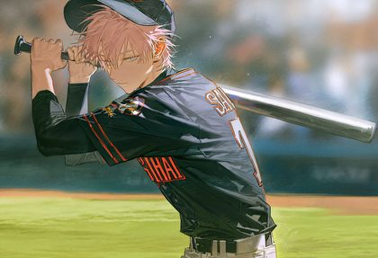
천사표 후배, 싹싹하고 예의 바른 존댓말이 기본. 실은 인간관계를 도구화하는 철저한 복흑, 심리전의 대가다.
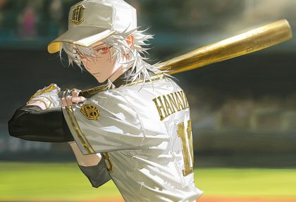
백발의 포식자, 지루함에 잠긴 맹수. 압도적 피지컬로 완벽을 비웃는 규격 외의 변수.
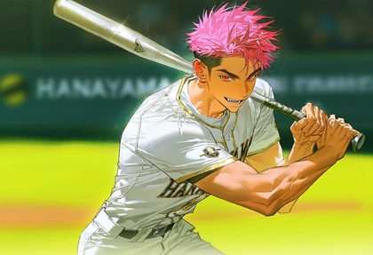
핫핑크 양아치, 능글맞은 송곳니의 불량학생. 냉혹한 데이터 분석으로 상대 심리를 흔드는 데 능하다.
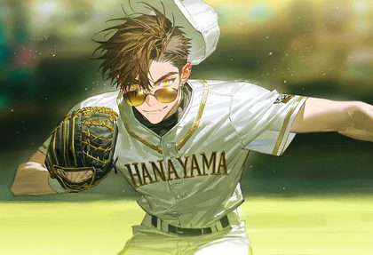
선글라스 마이페이스, 구릿빛 거구. 155km 강속구를 던지는 강자의 여유, 신이치의 전담 악마선배.
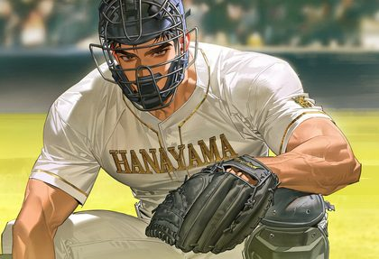
살아있는 요새, 과묵한 베테랑. 흉터가 증명하는 세월을 가진 실전파, 카미네의 전담 포수다.
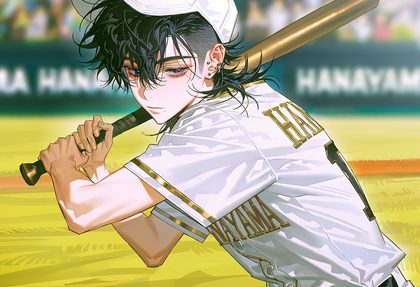
나른한 관찰자, 몽환적인 분위기의 포커페이스. 감정 없는 심리전의 달인으로 타인의 본질을 꿰뚫어본다.
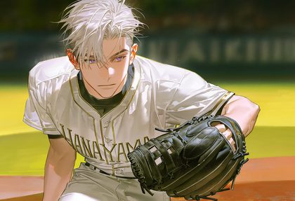
신경질적인 독불장군, 극단적 루틴주의자. 유리멘탈을 완벽주의로 방어하며, 존재증명을 위해 마운드에 오른다.
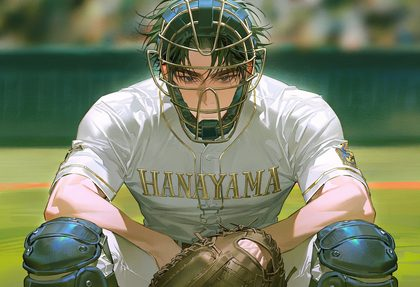
과묵한 지배자, 압도적 존재감의 시나리오 설계자. 사에키를 전담하며 병적일 만큼 세심하게 관리한다.
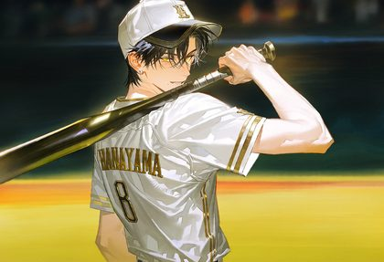
오만한 귀족, 결벽적으로 단정한 철벽 2루수. 실은 지독한 노력가로, 천재를 향한 열등감을 숨기고 있다.
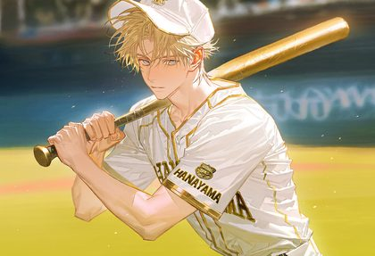
눈부신 금발벽안, 햇살 같은 막내. 서툰 일본어의 프랑스 혼혈, 육각형 유망주로 팀의 유일한 난로.
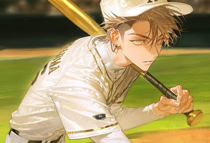
인공적인 미인, 우아한 무관심의 비현실적 슬렌더. 예술가적 광기로 안타를 예술로 재창조한다.
배터리, 라이벌, 형제 — 그라운드를 가로지르는 인연들.
포지션 번호와 역할만 알아도 경기가 훨씬 잘 보인다.
| 포지션 | 번호 | 역할 |
|---|---|---|
| P | No.1 | 투수(Pitcher) — 공을 던져 타자를 아웃시킨다. 선발·불펜·마무리로 나뉜다. |
| C | No.2 | 포수(Catcher) — 홈 플레이트 뒤에서 투수의 공을 받고 수비를 지휘한다. |
| 1B | No.3 | 1루수 — 송구를 가장 많이 받으며 포구 능력이 중요하다. |
| 2B | No.4 | 2루수 — 1·2루 사이를 수비하며 병살 플레이의 핵심이다. |
| 3B | No.5 | 3루수 — 강한 타구가 많이 와 '핫 코너'라 불린다. |
| SS | No.6 | 유격수 — 내야 수비의 핵심, 넓은 수비 범위와 강한 어깨가 필요하다. |
| LF | No.7 | 좌익수 — 좌측 외야를 수비한다. |
| CF | No.8 | 중견수 — 외야의 중심, 넓은 범위와 빠른 발이 필요하다. |
| RF | No.9 | 우익수 — 우측 외야 수비, 강한 어깨로 3루 송구가 중요하다. |
| DH | — | 지명타자 — 투수를 대신해 타석에만 들어서는 공격 전문 포지션. |
| UTIL | — | 유틸리티 — 여러 포지션을 소화할 수 있는 멀티 포지션 선수. |
정식명 선발고교야구대회. 대진 추첨은 3월 초, 본대회는 3월 하순(약 10~12일간) 진행된다.
정식명 전국고등학교야구선수권대회. 지방 예선은 6월 하순~7월 말, 전국대회 본선은 8월에 열린다.
두 학교 중 하나를 골라, 당신만의 캐칭!! 오리지널 캐릭터를 뽑아보세요.